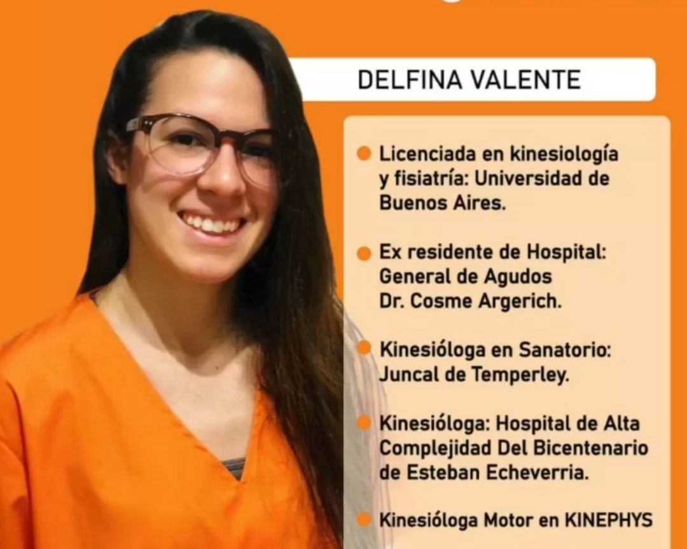
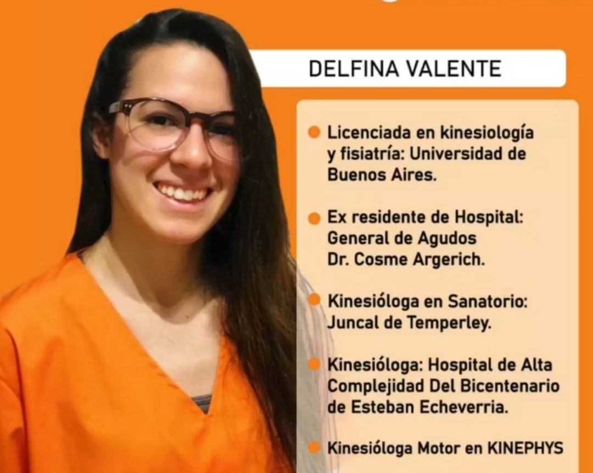

Somos un consultorio de kinesiología conformado por un grupo de profesionales dedicado a la rehabilitación funcional de distintas patologías. Tenemos el objetivo de mejorar la independencia funcional y la calidad de vida de nuestros pacientes y al mismo tiempo hacerlos sentir cómodos a través de una atención personalizada.
 



Atendemos únicamente de forma particular.
Dejanos tu consulta y te contactaremos a la brevedad:
Aristóbulo del Valle 122 - Lanús Oeste